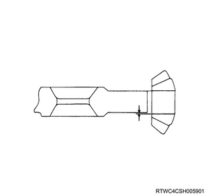
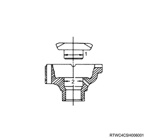
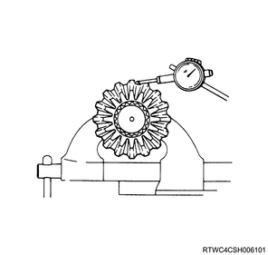
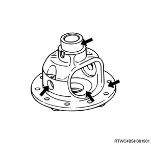

Note
1. Measure the pinion gear using the micrometer.
Note
Standard： 0.06 to 0.12 mm { 0.002 to 0.005 in }
Limit： 0.2 mm { 0.008 in }

1. Measure the side gear using the micrometer.
Note
Standard： 0.03 to 0.10 mm { 0.001 to 0.004 in }
Limit： 0.15 mm { 0.006 in }

Note
Standard： 0.08 to 0.36 mm { 0.003 to 0.014 in }
Limit： 0.5 mm { 0.02 in }

1. Inspect the differential cage.
Note
